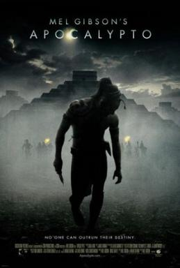
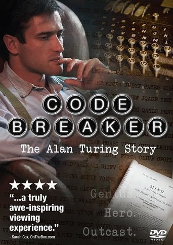
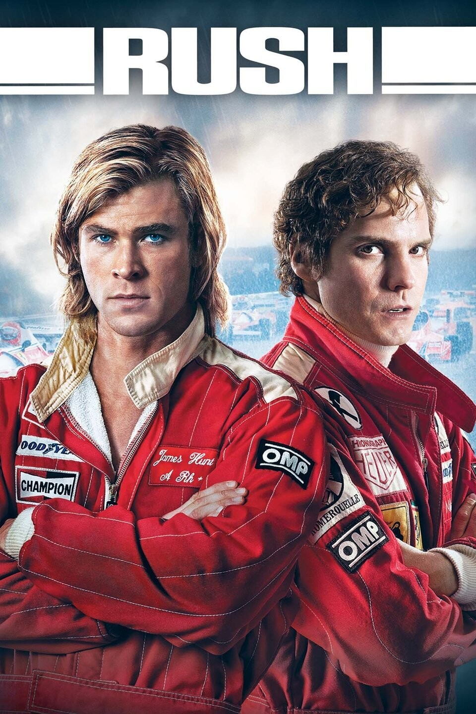

Gladiator (2000)
Overview
Gladiator delivers epic storytelling of betrayal and revenge in ancient Rome, with coherent narrative and original drama. The arena climax offers catharsis against tyranny. Timeless classic exploring Roman society.
Epic tales from ancient civilizations, groundbreaking scientific discoveries, business innovations, and true stories of human achievement that shaped our world.
Films depicting epic battles and historical events from ancient and medieval times, showcasing warriors, empires, and legendary conflicts.
Gladiator delivers epic storytelling of betrayal and revenge in ancient Rome, with coherent narrative and original drama. The arena climax offers catharsis against tyranny. Timeless classic exploring Roman society.

Braveheart portrays rebellion and freedom in medieval Scotland, building from tragedy to uprising with historical liberties. Visceral battles highlight courage and tyranny. Engaging on politics and warfare.

Apocalypto follows a thrilling chase in the declining Mayan empire, rooted in cultural authenticity. Raw visuals capture jungle perils and rituals, exploring civilization's collapse and resilience. Provocative on pre-Columbian societies.

300 stylizes the Battle of Thermopylae into a defiant epic, with straightforward plot amid stylized violence. Comic-book visuals emphasize heroism and sacrifice against tyranny.

The Last of the Mohicans blends romantic adventure and action in colonial America, with formulaic yet coherent plot. Stunning wilderness visuals underscore cultural clash and survival.

Troy reimagines the Iliad with grand warfare spectacle, deviating for cinematic flow. Lavish siege visuals explore glory, fate, and frailty.

300: Rise of an Empire expands to naval battles, action-heavy but less original. Stylized visuals delve into Persian invasion and Greek unity.

Gladiator II continues Roman arena struggles with political intrigue echoing the original. Grand Colosseum visuals highlight legacy and rebellion.

The Rising Hawk shows Carpathian resistance to Mongols, clichéd unity plot against invasion. Scenic mountain battles touch on freedom and heritage.
Stories of adventurers facing harsh environments and personal trials in uncharted territories.

The Revenant unfolds raw survival of betrayal and vengeance, coherent despite nonlinear elements. Breathtaking frozen wilderness visuals amplify endurance and nature's indifference.

Jungle recounts harrowing Amazon trek, tense and predictable survival plot. Lush visuals convey jungle's beauty and peril, exploring friendship and limits.

The Lost City of Z follows Amazon quests driven by obsession and discovery. Evocative jungle visuals underscore colonialism and the unknown.
Alpha depicts prehistoric survival and wolf domestication, simple bonding plot. Stunning icy visuals highlight companionship and evolution.
Biographical accounts of brilliant minds in science and math, highlighting intellectual breakthroughs and personal struggles.

The Imitation Game recounts Enigma-cracking in WWII, taut plot blending tension and drama. Crisp visuals evoke urgency, delving into intelligence, prejudice, and innovation.

A Beautiful Mind explores genius and schizophrenia, twisty yet coherent plot. Elegant visuals mirror mental states, probing reality and intellect.

The Man Who Knew Infinity traces mathematical journey amid cultural clash. Serene visuals reflect pursuits, examining intuition versus proof.

N Is a Number chronicles nomadic mathematical life through insightful anecdotes. Simple visuals focus on pure pursuit and eccentricity. Enriching on collaboration.

Codebreaker documents wartime contributions and tragic fate, poignant narrative of achievement and persecution. Archival visuals enhance authenticity, addressing innovation and bias.
Profiles of entrepreneurs who revolutionized industries through vision and determination.

The Aviator sweeps through ambitious life of innovation and obsession, coherent but lengthy. Opulent visuals capture aviation feats, delving into genius and mental health.

The Founder details empire-building, shrewd plot on ambition's dark side. Clean visuals trace fast-food evolution, probing capitalism and ethics.
.jpg)
Lamborghini: The Man Behind the Legend traces rivalry-driven success, formulaic but coherent plot. Glossy visuals showcase cars, exploring competition and legacy.
Accounts of figures in politics and law enforcement who shaped history through controversy and revelation.

Richard Jewell exposes media and FBI mishandling, compelling plot of heroism to nightmare. Authentic Olympic visuals critique presumption and justice.

Snowden dramatizes surveillance whistleblowing, tense plot balancing stakes. Slick visuals expose tech, debating privacy and security.

Mark Felt unveils Watergate leaks, methodical intrigue plot. Period visuals evoke tension, examining loyalty and truth.

J. Edgar surveys FBI tenure, nonlinear plot on power and secrecy. Moody visuals reflect eras, probing authority and repression.
Stories of racing legends and rivalries that defined motorsport history.

Ford v Ferrari revs Le Mans rivalry of innovation versus tradition. Thrilling race visuals capture speed, exploring corporate ambition.

Rush accelerates F1 rivalry of competition and recovery. Pulse-pounding 1970s visuals delve into risk and resilience.
Biographies of pioneers who pushed the boundaries of human achievement in space.

First Man orbits moon mission blending triumph and loss. Immersive space visuals contemplate sacrifice and exploration.
Films based on real tragedies and heroic responses to crises.

Titanic intertwines romance and disaster, emotionally coherent epic. Spectacular sinking visuals address class and fate.

Only the Brave honors hotshots' camaraderie and tragedy. Vivid wildfire visuals explore heroism and loss.
Timeless films that have influenced storytelling and filmmaking.

Citizen Kane innovates nonlinear life unraveling through flashbacks. Revolutionary deep-focus visuals dissect power and isolation.